MBA, MEng, PMP, CISM | Servant Leader, Technology Executive & Strategic Advisor
Helping People and Organizations Achieve Success in Telecom, IT, AI, and Information Security
I provide the strategic vision and technical rigor required to transform technology into a competitive advantage
A highly accomplished ICT professional with over 26 years of experience in Telecom, Information Technology, and Information Security. My career is marked by a relentless pursuit of excellence and a commitment to continuous improvement. One of my core strengths is my ability to drive change and lead cross-functional teams to achieve exceptional results in the face of complex challenges. I leverage a servant-leadership approach to drive operational excellence and secure, scalable technology growth.
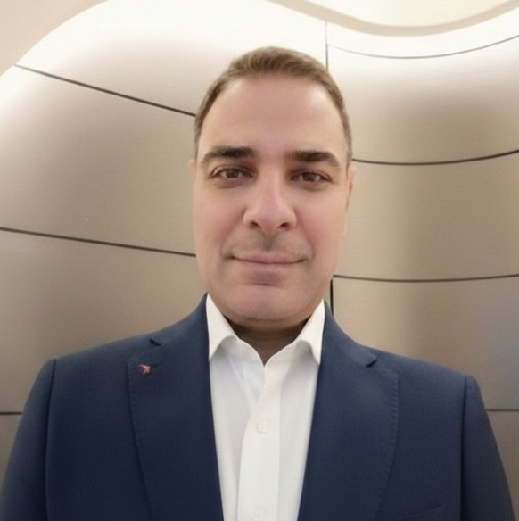
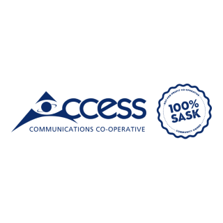
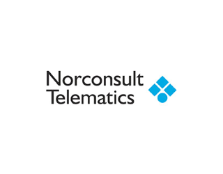
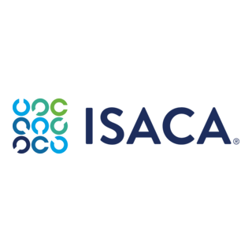
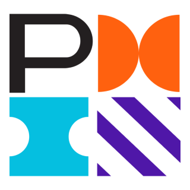
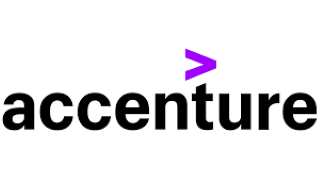
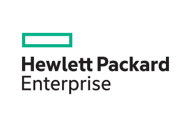
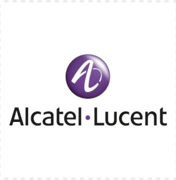
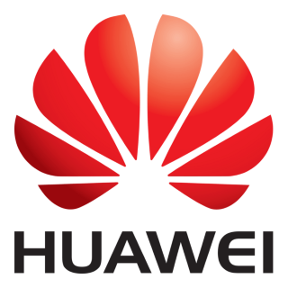
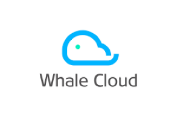
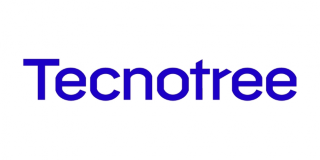
Leadership and Sustainability
University of Cumbria, UK (Jan 2015-Oct 2016)
Electrical and Electronics
Lebanese University (Sep 1994-Jul 1999)
• Conducted comprehensive analyses of existing systems to identify strengths, weaknesses, and opportunities for improvement.
• Developed detailed technology roadmaps to guide the evolution of systems and applications in alignment with organizational goals.
• Led end-to-end BSS transformation program, encompassing needs analysis, RFI/RFP development, supplier selection, and comprehensive project planning.
• Provided strategic leadership, direction, coaching, mentoring, delegation, and HR oversight to 25 cross-functional resources.
• Owned end-to-end complex projects’ lifecycle from initiation to closure leading to exceeding stakeholders’ expectations.
• Defined project charters, timelines, and budget (CAPEX, OPEX), resource needs, resource utilization, regular status updates, vendor management, and performance evaluation.
• Revitalized the Company's IT vision, developed the product roadmap, and led the Company's technology transformation.
• Established the Information security division from scratch (strategy, governance, risk, and incident management) to protect organization assets and brand, which decreased security incidents by 80% and MTTR to 7 days.
• Transform IT from a cost center that costs the company 7% of its revenue, to a profit center that contributes 10% of the company’s revenue.
• Ensured the IT Portfolio strategy was effectively delivered to achieve business objectives in terms of return on investment, data integrity, customer satisfaction, and operational excellence.
• Reduced project cycle time by 15%, and reduced technical debt by 10% by continuous improvement of project delivery methods, techniques, processes, and practices.
• Collaborated with business stakeholders to define business and systems requirements for new business solutions and technology implementations and translated them to technical specifications.
Led end-to-end Digital Enterprise and BSS transformation, including needs analysis, supplier selection, project planning, and governance. Recommended optimal approaches for migrating legacy systems, with rigorous risk and cost-benefit analysis.
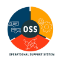
Led a multi-year, strategic transformation of the Operations Support Systems (OSS) layer for a major Communications Service provider. This program modernized the infrastructure to fully leverage 5G capabilities and integrated AI/ML-driven automation to streamline end-to-end operations. By orchestrating the lifecycle of 25 mission-critical systems across 10 global vendors, I enabled the organization to adopt agile business models and significantly improve cross-domain KPIs.
Directed a comprehensive, three-year cybersecurity initiative designed to harden the organizational posture against evolving global threats. By architecting a multi-layered defense strategy across eight critical streams—ranging from perimeter hardening and data encryption to privileged access management and Business continuity management. I built a "Security-First" culture. This program redefined the organizational design and established a sustainable framework for long-term data protection and regulatory compliance.
Pioneered BI tools, CVM, CDM, and advanced analytics, resulting in a 15% incremental revenue increase through informed decision-making.
Orchestrated a high-impact initiative to consolidate three geographically dispersed data centers into a single, high-efficiency Private Cloud environment. By integrating compute, storage, networking, and virtualization into a unified stack, I reduced the physical infrastructure footprint while maintaining 100% of technology objectives. This transformation significantly lowered operational overhead and optimized resource utilization across the enterprise.
Pulse - Top Executive Award - Big Data
Pulse - Top Executive Award - Customer Success
Regina, SK, Canada | +1 639-994-9924 | mahmoudkhorbatly@gmail.com
LinkedIn